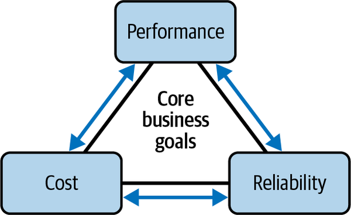
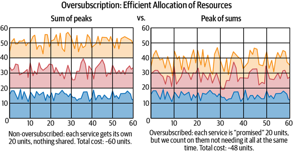
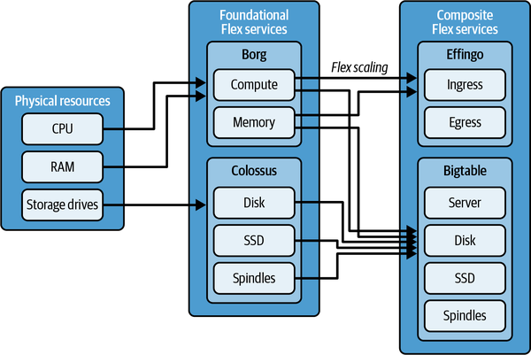
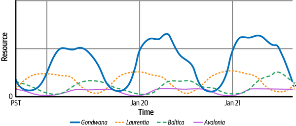
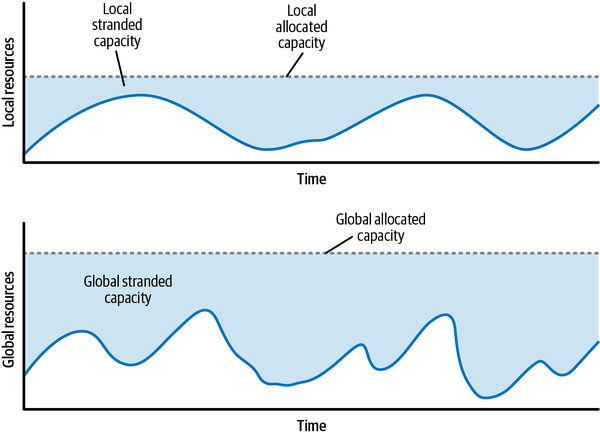
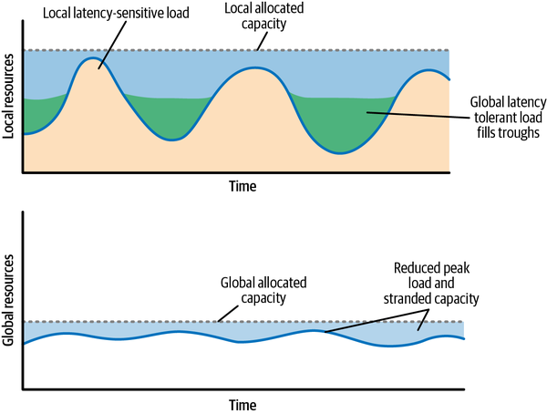
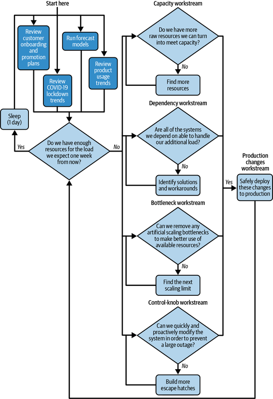
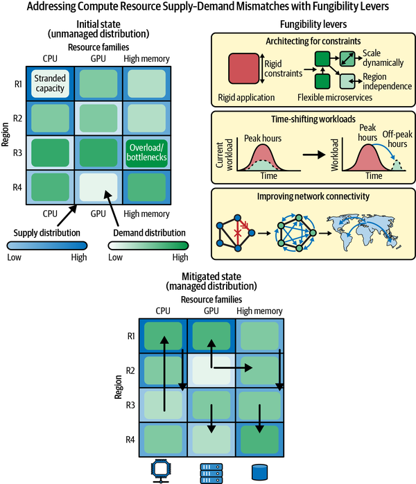

Capacity planning is the discipline of forecasting future demand and provisioning the supply to meet it. To scale infrastructure successfully, you must balance performance, cost, and reliability—all anchored by your core business goals.
Capacity planning heavily parallels the concept of error budgets. Just as 100% uptime is the wrong target for reliability, provisioning for every statistical edge case is the wrong target for capacity; you must make deliberate choices based on your explicit risk tolerance.
This chapter explains in detail how Google tackles operational and mid-term capacity planning. Balancing this complexity has never been more vital, especially as we scale to meet the explosive infrastructure demands generated by AI. In keeping with SRE principles, we also discuss how to engineer ourselves out of capacity planning altogether using cloud native scaling and elasticity techniques.
Your first capacity planning decision is determining whether you actually need the rigorous and expensive process detailed here. Is your service large enough, growing quickly enough, or critical enough to warrant it?
Organizations must deliberately decide how much effort to invest in capacity planning compared to the value gained from understanding those risks. Without a clearly defined target and informed decisions, a business assumes unclear risks and may be surprised by its actual exposure during an incident.
To simplify this discussion, for the majority of this chapter we target services large enough to introduce complexity and risk. While the examples provided are drawn from a hyperscaler context, the core principles apply across all deployment environments (on-premises, hybrid, cloud, or hyperscaler), and you’ll need to translate them to fit your specific scale.
This chapter breaks down how to establish a robust capacity discipline in your organization using real-world insights from Google SREs. Topics we will cover include:
Engineering out manual operational toil by designing for inherent cloud native elasticity from day one
Establishing the fundamentals of infrastructure management by modeling future workload growth and allocating physical resources to match it
Architecting safe system behaviors for when demand inevitably outpaces supply, focusing on overload mitigation, demand shaping, and capacity isolation
Maximizing utilization and reliability at the lowest possible cost through resource pooling, traffic routing, and load balancing, with an inside look at Google’s shared compute infrastructure, Flex.
We’ll also analyze production case studies focusing on Google Meet’s rapid scale-up during the COVID-19 pandemic and the modern infrastructure demands of AI, concluding with a continuous improvement framework for cross-team collaboration.
For most services, cloud scaling and elasticity simplify operations immensely, significantly minimizing or entirely eliminating capacity planning. Modern orchestration platforms let you automatically grow and shrink your deployments and allow you to define simple, rule-based infrastructure.
For example, you might have rules like the following:
If average CPU utilization exceeds 70% for more than five minutes, launch two additional instances.
If average CPU utilization is below 40%, remove one instance, but always keep at least five.
This setup keeps you from paying for underutilized capacity during low-traffic periods while remaining highly responsive during sudden peaks. Your infrastructure dynamically adapts to your utilization patterns.
If your service can tolerate occasional failures, leverage cloud provider autoscaling, or otherwise easily handle a capacity shortfall, your focus belongs on feature development, user growth, or maintaining the status quo. For small workloads, simple overprovisioning is often the best strategy because compute resources are remarkably cheap compared to engineering time.
Precision in planning is only valuable relative to the magnitude of your other engineering problems and opportunities. Keep this in mind before spending days tweaking numbers in a spreadsheet (for more on the trade-offs involved in managing risks, see “Risk Management”).
However, if you operate your own infrastructure, or your service is large enough to hit budget ceilings or cloud provider scaling limits, the remainder of this chapter is critical reading.
At its core, capacity planning involves predicting future needs (demand forecasting) and managing available resources (supply planning). This process requires navigating the constant tension that exists between resource efficiency and system reliability. To scale infrastructure successfully, organizations must carefully balance performance, cost, and reliability, ensuring that every capacity decision is firmly anchored by their core business goals, as illustrated in Figure 15-1.

Predicting future demand starts with measuring and understanding the past, making some educated guesses about how the future might be different, and adding service-appropriate buffers to account for uncertainty.
We plan capacity using these categories:
Organic demand refers to the natural increase in demand over time as a service gains and retains users or accumulates more data. It’s typically predictable by extrapolating historical trends.
Inorganic demand refers to demand changes driven by specific, discrete events rather than steady trends. There are two types of inorganic demand:
Planned inorganic demand includes scheduled events such as new feature launches, marketing promotions, and geographic expansions, as well as predictable events like the Olympic Games and Black Friday/Cyber Monday that your organic demand model otherwise misses.
Unplanned inorganic demand includes unexpected or unpredictable events that drive significant traffic, such as viral trends, sudden surges in customer demand, and major news events.
Each class of demand requires a different approach for forecasting and analysis. Trend analysis can forecast organic demand and identify periodic predictable demand events. You should account for scheduled inorganic demand during launch planning. Handling unplanned inorganic demand relies on buffer capacity, automatic scaling and deployment, and demand shaping.
To start, you need to understand your service in the context of the resources it consumes, or some metric like daily active users or queries per second (QPS) that you can strongly correlate to a resource consumption rate. Statistical methods such as linear regression, Holt–Winters smoothing, and ARIMA can be valuable tools for forecasting future demand based on past usage (organic demand).
Next, capture the ways in which future demand is likely to differ from past trends (inorganic demand). Planned inorganic demand consists of predictable spikes.
Unplanned inorganic demand is harder to quantify. Think about the largest potential traffic driver that your service should be expected to handle. Perhaps a popular singer might decide to livestream on your service with no warning—what would that do to your demand? That scenario would be very expensive to insure against, so it probably isn’t worth paying that bill each day. You can now think about the bounds within which you’re planning for seasonal or other predictable events, even if you don’t have high-fidelity forecasts for less frequent events.
Think about additional scenarios that might overload your effective capacity. Do you plan a budget for performance regressions from feature launches or bugs? Do you plan for distributed denial-of-service (DDoS) attacks? You can typically moderate this kind of demand by investing in process improvements or engineering, or you may find it practical to find some reasonable trade-off between overprovisioning capacity, dedicating engineering hours to optimization, or consciously accepting a higher risk if one of these events happens.
Next, operationalize demand telemetry. You want to monitor your system so that you know where the demand comes from, giving you a feedback loop to improve your ability to predict further into the future, and more accurately. As your system scales, the benefits of precision increase, but fundamentally there is always a margin of error when it comes to forecasting. Another way to improve accuracy is by accelerating your supply chain and reducing provisioning latency, thereby shrinking the window of time for which you actually need to predict capacity.
Capacity forecasts are uncertain, especially over longer time horizons and for less mature services. Instead of relying on single-point estimates, use probabilistic forecasts. This often includes expressing demand in terms of percentiles (e.g., p50 for the median, p95 or p99 for high-confidence upper bounds) to represent a range of potential outcomes.
Employ a scenario analysis process to explore which elements of your forecast are correlated and which can be treated as independent. Evaluate capacity plans against multiple plausible demand scenarios (e.g., low growth, expected growth, high growth). This helps you understand the potential range of outcomes and ensures your plans are robust.
Maintaining historical data for your service’s capacity needs and past predictions allows backtesting to better understand the historical accuracy and error distribution of forecast models, enabling iterative improvements and informing the choice of target confidence level.
Consider how capacity forecasting and uncertainty management contributed to incidents in your postmortems (aka post-incident reviews), whether as a contributing cause or a headwind to recovery.
You can think about demand in terms of a driver that makes sense for your product. These intrinsic product metrics might be daily active users, sales transactions, video streams, or page views, or you can think strictly in terms of the quantity of resources (compute cores, virtual machines, bytes, etc.) that you need for each day.
Thinking in terms of resources is straightforward when it comes to doing the math. Thinking in terms of the business means you need to constantly map your resource consumption back to business metrics. By understanding the operational cost of providing value to the business, you gain the data required to influence the product architecture and make informed design trade-offs. Measuring the relationship between business value and operational cost can be critical to driving future product design and engineering decisions, helping to create a virtuous cycle.
Here’s how you can put that into practice:
Instrument both the intrinsic product metrics and infrastructure metrics, including resource allocations and utilization.
Continuously calculate and graph the ratio of infrastructure usage to product demand (e.g., cores per 1,000 active users, disk bytes per item stored, etc.), and set up alerts for when these ratios change significantly. This can help you catch performance regressions and unexpected shifts in usage patterns.
Consider alerting when your resource consumption deviates from predictions. If your service doesn’t yet handle overload gracefully, these deviations might trigger urgent alerts for the on-call engineer. If it does, they can instead be logged as tickets for the planning team.
Use these metrics as an important component of your pre-launch performance testing and A/B testing, and in periodic benchmarks against key user stories and workloads.
Periodically validate and update your resource planning model based on the real-world relationship between the intrinsic product metrics and resource usage, and use these relationships to identify potential efficiency and optimization projects.
By implementing these practices, teams can treat the mapping between product demand and infrastructure needs as a living model that evolves alongside the system, leading to more accurate capacity planning and efficient resource utilization.
Your supply is the set of machine resources you have available to run your service. The demand forecast you developed previously serves as your baseline, unconstrained capacity plan. However, you cannot always procure exactly what you want, when you want it. You must apply real-world constraints to this baseline to generate your actual capacity plan of record (PoR).
This is where the layered modeling in business-driven demand (see “Business-Driven Demand”) proves its value. Because you have explicitly mapped the relationship between your intrinsic product metrics and your infrastructure usage, you can calculate the exact business impact of your supply constraints. If your supply PoR falls short of your unconstrained forecast, this explicit layering allows you to understand the trade-offs you need to make to bridge the gap—such as determining which noncritical features to degrade or what traffic to shed.
To formulate your PoR, you must evaluate the resources you have available. Your supply probably has the following dimensions that are important and unique to your situation:
Are resources functionally the same no matter where they’re located on the planet, or are there latency, regulatory, or other considerations related to where they’re located? Can you trade resources between locations or even between resource types (e.g., using storage to cache compute-intensive results)?
How fast can you get resources and put them to work serving demand?
How much can your supply adjust both upward and downward?
Next, establish the volume of supply you can deliver with predictably low lead times. That supply could be inventory you keep warm in a rack, or it could be small enough that your cloud provider always approves it dynamically. You then need to establish your practical upper bound for capacity delivery at different time horizons. Whether on-premises or as a hyperscaler, that number could be power- or space-limited. Even as a cloud customer, the upper bound may be some number at which point either your vendor or your budget slows you down. Your flexibility within that range is important to how effectively you can dynamically throw supply at a problem.
The supply trade-offs your cloud provider makes will give you insights into your own risks. Relying on shared, dynamic supply introduces the risk of contention: the very events driving your traffic spikes might simultaneously strain your cloud provider’s resources, and they may not be able to meet every uncontracted customer demand.
If you cannot tolerate this risk, you may wish to avoid dynamic scaling and instead purchase and spin up dedicated capacity ahead of the event that you are worried about.
You may also need extra capacity when relying on heavily constrained resource pools, such as those used for new AI services, where global hardware supply is structurally scarce. These environments typically lack on-demand elasticity and require long lead time provisioning.
However, paying to insure against every possible risk is expensive. Except in unusual cases—such as highly regulated environments, financial trading platforms, or massive ML training jobs—you don’t want to run permanently in a mode of dedicated provisioning, as it drives up the prices and limits the benefits of the cloud. This is an area where technical decisions are important, but contractual, product, and financial requirements are also critical.
Ultimately, supply represents your primary infrastructure cost and must be managed carefully. While massive overprovisioning makes operations easier and provides cover for unforeseen demand, finding the right balance between maintaining expensive idle capacity and risking outages is a critical, ongoing business decision that must evolve alongside your product.
Building a reliable service requires a deliberate trade-off between resource efficiency and the ability to maintain service quality during load spikes or capacity loss. Overload is a classic service failure mode, and many SRE techniques exist to address this threat. Traffic management techniques such as load shedding, load balancing, and graceful degradation are battle-tested mitigations for active overload, but they can also be used to proactively optimize resource efficiency. This section focuses on traffic management as a key strategy for navigating the tension between reliability and efficiency, sometimes contradicting the suggestions we make in “Capacity Isolation and Failure Domains”.
A core challenge in capacity planning is that a single service must often handle heterogeneous traffic. A backend’s clients might include latency-sensitive user features, high-throughput batch jobs, and external developer APIs. The requirements of these traffic streams can differ dramatically; for instance, an initial, critical request to load an application has strict latency needs, while subsequent background updates do not. Being able to distinguish these traffic streams is important for setting service level objectives and deciding what issues are important enough to wake someone up over, but it can also be leveraged in the pursuit of resource efficiency.
The key observation of this section is that these latency and availability requirements are properties of specific traffic to the service, not the service overall. When the most stringent requirements apply to only a subset of a service’s traffic, you can provision to safely and redundantly serve that traffic within SLO, and serve the traffic with more relaxed requirements out of the spare capacity. Hyperscalers and internal platform teams can, in turn, provide the tools and differentiated service tiers to make this distinction possible.
Standardizing the concepts used to modify service behavior through a platform-centric architecture allows this approach to scale without prohibitive cognitive overhead. Clients are responsible for understanding their needs and tagging their traffic through automatic RPC context propagation frameworks like OpenTelemetry, allowing backends to take advantage of tags where relevant.
The first edition of this book introduced criticality as a traffic dimension used to prioritize requests to serve during overload while shedding less critical traffic to preserve service reliability. The essential aspect is that this designation propagates separately from request details, and the cost of discarding a low-criticality request is much lower than the cost of processing it.
Just as you can tag traffic for criticality to handle overload, you can also tag traffic originating from background updates as “latency tolerant” to optimize resource usage. For example, standard user-interactive requests should be served as close to the user as possible, but latency-tolerant background requests can instead be served from wherever there is the most idle capacity. This allows you to route nonurgent traffic to less-utilized datacenters on the other side of the world, reclaiming stranded capacity and flattening the curve of cyclical resource needs. We explore how this efficiency mechanism is applied globally to improve efficiency in “Reclaiming Stranded Capacity”.
Finally, ensure capacity provisioning directly supports traffic engineering under failure conditions, which we refer to as “draining” traffic from a particular location in order to redirect it elsewhere.1 Also, make sure that you can exercise this capability safely and that it’s tested in realistic conditions (at Google, we do this via DiRT exercises, described in “Disaster Recovery and Resilience”).
A key way to drive up your reliability is to make sure that a failure in one part of your infrastructure has limited ability to bring down the rest of your infrastructure. If you run a service yourself on your own equipment, you should create an SLO that reflects both the reliability with which you can operate your service and the reliability profiles of its critical dependencies, such as machine availability, power, the network, and other infrastructure layers. Creating this SLO gets harder as the system or stack increases in complexity.
In cloud environments, we buy infrastructure and products as services with predetermined availability targets—typically a 99.5% zonal SLA or a 99.99% multiregional SLA. Cloud providers manage the underlying infrastructure, often boosting availability by engineering their multiregional services to automatically survive entire zonal outages. They manage the intricate underlying systems and dependencies to fulfill these commitments, which serve as foundational elements for your broader SLOs. As you develop proprietary products on top of these cloud offerings, your total effective SLO and capacity are derived from the combination of all components in the stack, regardless of whether you manage the hardware directly or utilize layers provided by a service provider. Ultimately, aligning infrastructure SLOs with defensive application design protects the user experience and transforms system reliability into a core business asset.
This section is really about isolation and how we plan for things going wrong, but through a capacity lens. It is not strictly about how you deploy into multiple locations or design your code and load balancing to deal with these challenges—it assumes that you’ve already done so, and you are now just making sure that you are provisioning the capacity required to deal with a failure.
If you are responsible for a small service or set of microservices, here are some recommendations:
Maintain sufficient separation of infrastructure assets so that the failure of one is unlikely to affect the availability of others. Have some extra capacity available to the full stack to adequately handle not only typical daily usage cycles and near-term trends but also less-frequent demand surges, within reason. Ideally, this “extra capacity” is maintained proportionately despite a system seeing growing demand over time; evaluate that demand periodically.
Establish a basic ability to load balance and health-check isolated service segments, with a few different ways to shed load, prioritizing the more important traffic under high load.
If your system is using shared internal resources, enforce strict isolation between customers to prevent damage due to other customers’ misconfiguration or unprecedented demand.
Use containerization or another similar approach as a fast way to add capacity (ideally automated provisioning) when you need to abandon standard procedures due to a “success disaster” of unprecedented demand. Consider having an agreement with hyperscalers.
Validate your infrastructure assumptions to avoid unexpected shared-fate failures down the road, and continually weigh your capacity requirements against cost-benefit trade-offs.
As a cloud customer, your goal in purchasing capacity is to strike the right balance between frugality and uptime. Defining this target is critical, whether you are serving internal teams or external users. Remember, overengineering reliability is an expensive luxury, but underprovisioning is a fast track to an outage. Much like the hyperscaler is thinking about aggregations, you need to develop an understanding of the resources you expect to need in each dimension, at the time horizon required for your supply chain to acquire them. You should also think about how your demand is likely to correlate with aggregate industry demand, which may highlight your exposure to the systemic risk of being on the internet and consuming resources from cloud providers.
Start by considering zonal and regional failure modes and deciding your tolerance for each of those. You should avoid single-zone deployments except for testing and fault-tolerant workloads, so by default you should provision regional capacity with sufficient excess to handle a zone failure. For high-criticality workloads that must survive an entire regional failure, you must provision capacity across multiple geographic regions.
Within this basic model, make sure you have designed the isolation and operational plans necessary for one failure domain to go offline without taking down any of the others. Then make sure the remaining instances have sufficient capacity to handle their workloads and the traffic redirected to them. As discussed previously, depending on your sensitivity to risk, you may want to have that capacity already provisioned and spun up—this strategy is expensive, but it’s far more reliable and expedient during major cloud disruptions than relying on autoscaling when the rest of the internet is trying to scale at the same time.
The needs of your business or service will define the right level for planning. Latency and distance to users may provide a constraint, as may your tolerance for different kinds of risks. For normal and even fairly extreme failures, zonal isolation is probably sufficient. If you want to protect yourself from broader risks, you might want to be able to fail out of entire regions (due to earthquakes, large software isolation failures, prolonged grid failures, etc.). Regional resilience demands a much higher investment in networking and service duplication. The most extreme case might be continental capacity, with very high complexity and significant latency and networking trade-offs, while offering some level of protection against extreme events (political instability, major network failures, locusts). Increased operational and cloud costs may quickly outweigh the perceived benefits of diversity within your cloud provisioning.
The challenge increases again when you look beyond the most generic cloud resource provisioning. If your system relies on your cloud provider’s internal APIs, you must know exactly where those endpoints are hosted. During an outage, the control plane you need to orchestrate a failover might live in the exact zone you just fled, or it may depend on an external service provider suffering from the same disruption. You must verify whether these dependencies are resilient, or if you should expect them to degrade or route from a distant geography. Similarly, you must evaluate your network constraints during sudden traffic migrations. If you run a workload split across two zones and one fails, you instantly double the load on the surviving zone, placing a severe strain on your infrastructure and its downstream dependencies.2
Another area that is easily overlooked is the networking implications of your provisioning. Networking is easy to oversubscribe and pretty resilient to many kinds of failures; however, it also underlies everything you do at this scale. You need to understand the volume of data you are moving between zones or regions, how much is going to APIs within your hyperscaler, and how you are managing egress from cloud providers, whether to other providers or to your own customers. You can oversubscribe networking with incredible efficiency, but as your sensitivity to risk increases, you should dedicate capacity to your most critical workloads.
You should also invest time in understanding each of your direct and transitive dependencies, through research, discussions with your providers, and regular testing. However, as a consumer of a cloud service, you are unlikely to be able to fully simulate the kinds of failures you are attempting to protect yourself against. In some cases, the providers may not fully understand their own dependencies, and those dependencies change over time. You may also be exposed to the risks of shared services, where the behavior of other customers can affect your own experience in ways that are difficult both to detect and to mitigate.
Cost is an aspect of planning as well. If you choose to provision dedicated resources to provide additional resilience, you should look for opportunities to consume that capacity rather than leave it idle. At the same time, you still have to maintain the ability to evict these more opportunistic workloads sufficiently quickly that your production workloads can spin up fast enough. Reporting and offline processing is ideal here, but this requires robust automation and planning to function effectively.
As a final set of choices you can make as a customer, multicloud or hybrid on-premises options can give you another level of flexibility. Either option is likely to dramatically reduce correlated failures between providers, particularly those driven by software and unexpected single points of failure that may exist within any given hyperscaler. They may also provide greater diversity of APIs and functionality, or even cost savings through negotiation or a bit of price arbitrage. However, these options significantly increase the complexity of capacity planning, failure domain identification, and cross-ecosystem operations. If you buy yourself infrastructure diversity by adopting multiple cloud vendors, your cross-cloud orchestration must not become the weak link that degrades your required quality of service.
Once you have defined your failure domains and provisioned capacity accordingly, you must operationalize those plans. Add traffic draining to your playbook so you can reliably move away from failure conditions, and build and test the automation required to execute these responses quickly and predictably. It is almost impossible to build reliable automated solutions during an active incident, so invest the time in advance.
To mitigate the risks of severe system overload, organizations must shift from static capacity planning to dynamic traffic and failure management. Here we explore how to maximize resource efficiency through criticality-based load shedding and how to design intentional “crumple zones” that gracefully degrade performance when demand outstrips supply.
“Traffic Management and Tagging” defines criticality as a traffic dimension used to prioritize requests during an overload event. The load-shedding strategies discussed here rely heavily on this tagging and are based on a key assumption about capacity planning: we assume the service has enough total capacity worldwide to handle both its critical and batch traffic combined. Efficiency is gained by provisioning for the single global peak, rather than provisioning for simultaneous peaks in every local region. This means that while a specific region might temporarily reject batch requests during a traffic spike, that work is expected to eventually succeed by being retried in another, less loaded region.
Consider a service that supports user traffic as well as occasional internal batch jobs. If you provision a single service to be able to simultaneously handle the sum of peak user traffic and peak batch load, you are likely significantly overprovisioned most of the time. However, if you provision for any less, you are not able to serve reliably if that load does all arrive at once—unless you adopt mitigation techniques.
A common strategy is to physically isolate different traffic classes by partitioning the service. For example, you could run user-facing traffic on a partition of reliable reserved instances and run batch jobs on demand, using a separate partition of spot instances. This approach provides strong guarantees against resource contention—surges in batch requests simply cannot steal resources from user-facing requests. This is a reasonable choice if you can afford the resource and maintenance overhead, as it prioritizes simplicity and strong isolation.
An alternative is to move from physical isolation to logical isolation within a shared environment. This is where effective traffic management becomes a tool for efficiency. By labeling traffic with its criticality, you can serve all requests from a unified instance. This instance is provisioned primarily to handle the high-priority traffic, and you can then use the resources that provide redundancy for this high-priority traffic to also serve lower-priority traffic on a best-effort basis.
Choosing the right strategy depends on evaluating these trade-offs:
Partitioning offers simplicity and strict isolation at the expense of higher resource costs.
Shared environments with criticality offer greater efficiency but require more sophisticated traffic management techniques. This approach introduces the risk of “noisy neighbor” problems, where low-priority work could subtly degrade high-priority performance through resource contention.
If you adopt the shared model, you can provision for the high-priority traffic with confidence, knowing that the service rejects low-priority traffic first if it becomes overloaded. Well-behaved clients retry failed requests with adaptive throttling and use smart exponential backoff and jitter. Batch requests to a shared service experiencing heavy load are rejected and can back off, taking longer to complete but not requiring additional, dedicated resources. If you do not control the client, you are at the mercy of unmanaged retries, where sudden thundering herd behaviors can instantly break your server-side defense strategies when the site attempts to recover.
What happens when your demand exceeds supply? If you deploy extra replicas for redundancy, the answer may be nothing until the demand surge exceeds your spare capacity. If you continue to have demand above supply, you need to have a plan. Map out exactly what happens when your system falls over. Define the degradation profile: calculate how much the service slows down, determine when users will actually notice, and establish whether the system goes completely dark or suffers catastrophic data loss. Your recovery strategy cannot rely on guesswork. You must know if your playbook is a simple matter of throttling users, or if you are looking at days of painful, manual data restoration after dropping writes. These thresholds are the foundation for measuring your operational risk. After all, an app that serves cat photos and a control system that keeps a power grid online exist in entirely different universes when it comes to acceptable failure thresholds and recovery costs.
Now that you can characterize why having demand crash into supply is bad, you can start thinking about how to build crumple zones into your system. The load-shedding and criticality strategies discussed in the previous section are prime examples of these crumple zones in action.
Demand shaping is the most obvious category, because at the end of the day it is cheaper to fix demand than it is to have more and more supply available. Beyond shedding low-priority work, demand shaping also includes load balancing to shift work to less busy instances, or temporarily disabling features with higher compute costs. Always measure when demand shaping occurs, as it forms a critical part of the feedback loop that helps your business assess the value of that shed work. A robust and well-instrumented load-shedding capability allows you to choose intentionally between investing more in supply to shed work less often, accepting the business costs associated with shedding, and minimizing capacity spend.
Demand shaping really works best in large-scale, multitenant systems. For architectures that require dedicated resources, such as running customer-specific instances, the strategy shifts to isolation and per-customer capacity planning. In these circumstances, it may be beneficial to involve customers in establishing clear SLOs and to communicate explicit system degradation behavior when their demand spikes beyond their agreed quota.
If your supply is fungible between your different services quickly enough, another approach is either to shift it away from lower-value services or to hold centralized inventory. Centralizing inventory should make you consider the correlation of demand factors between your services, but it may offer better risk mitigation for your supply dollar; “Resource Pooling and Flex” explores this approach.
Outages are inevitable, so you should plan for them before they actually happen. Plans may not always work as predicted, but planning remains critical. All the thought that goes into forecasting your demand and understanding your supply is your starting point. The next step is to ensure you have built the monitoring and conducted the regular load testing needed to understand how your system behaves under stress. This will show you how your system responds when traffic spikes or a datacenter abruptly goes dark, giving you the visibility to hunt down and fix your worst infrastructure bottlenecks before your users are affected.
Devote time in advance to brainstorming the most likely and most serious capacity issues you could encounter and how you plan to respond when they happen. This preparation may require more engineering changes and updates to your plans, but it should definitely result in a playbook that you can grab when the pager goes off. As systems scale and response time becomes critical, prioritizing automated responses and agents for critical actions is vital. While a common playbook response for manual intervention to quickly increase capacity in the face of sudden demand growth remains useful, the ideal approach is automation. Automating the capacity increase removes the need for manual approval at 3 a.m. on a Saturday.
When you have an outage, grab your playbook and work the problem. If you have instant supply, deploy it. Our experience is that surprisingly few sudden problems are caused by capacity planning issues, but having an emergency buffer lets you cool down your system fast. Deploying quick mitigation tricks—like shifting traffic to alternative regions or turning off expensive features—isn’t a viable long-term strategy, but it buys you the breathing room you need to get ahead of the outage and get back online.
Through the postmortem process, learn the valuable lessons that analyzing the outage revealed, and act on those lessons to prepare for the next incident before it arrives.
Systems inevitably encounter challenges whose probabilities and magnitudes are extremely hard to predict and highly specific to their design. While heroics may be an option during a crisis, they are not a plan. You must proactively plan for everything you can anticipate in advance, saving the really unconventional solutions for after your best plans have failed. If you reach that point, you have already lost the capacity battle; at that stage, the operational focus must pivot entirely to incident management, and you’ll need to bring in additional expertise. Hopefully this section has sparked ideas you can implement now, so that an unpredicted outage doesn’t catch you off guard and ruin your Saturday morning sleep.
Achieving optimal resource efficiency requires striking a balance between financial cost and the safety margins necessary for reliability. This section demonstrates how organizations can get maximum value from their capacity by transitioning from siloed provisioning to shared resource pools and strategically reclaiming idle, time zone–dependent capacity.
Capacity costs money, and businesses encourage teams to be efficient—but what exactly does that mean?
A key efficiency metric is utilization, defined as the ratio of usage to capacity. This metric measures how actively workloads consume resources; higher utilization indicates less idle capacity. When optimizing, focus on one of two levers: right-sizing your provisioned capacity to match actual demand, or driving up usage by increasing traffic or adding new business-critical features.
Another key efficiency metric is the cost of capacity. You can prioritize optimization based on the financial impact of idle capacity, which is the delta between total provisioned resources and actual usage. This helps identify where it is worth spending engineering time to improve efficiency.
Business value is the utility a product or service delivers, measured by metrics such as ad revenue, product purchases, or daily active users.
Efficiency and reliability exist in constant tension. Overprovisioning a service to increase reliability sequesters resources that could otherwise serve different workloads, which drives up costs. Conversely, underprovisioning leaves the system without sufficient capacity to absorb unplanned traffic spikes or zonal outages, which directly compromises reliability. Teams must evaluate multiple efficiency metrics to ensure they allocate the amount of resources required to meet business objectives with an appropriate reliability margin, avoiding the pitfalls of both extremes.
Ultimately, organizations aim to maximize business value from their capacity spend. Providing teams with accurate, actionable capacity metrics allows them to optimize overall efficiency. Here are some considerations:
Prioritize high-cost services. These offer the greatest return on engineering investment.
Analyze low-utilization services. While these are common targets, don’t assume low utilization indicates waste. For instance, DDoS mitigation systems may appear idle, yet they deliver critical business value during an incident.
Assess high-utilization, low-value workloads. Individual operations, such as executing a query or storing a log message, may run efficiently in isolation. However, engineers must evaluate the business necessity of their execution frequency. Running a query every minute versus once a day can alter capacity costs by an order of magnitude without impacting business outcomes.
Deprioritize low-cost services. Modifying low-spend services rarely justifies the engineering time required, unless optimizations can be applied centrally and automatically across the platform.
A key value proposition of a cloud hyperscaler is providing the illusion of unlimited capacity on demand, alongside levels of reliability that are difficult to achieve independently. While some of this stems from massive economies of scale, much of it relies on the ability to aggregate diverse, uncorrelated demand and use statistical models to minimize costs.
Simply put, it is vastly more efficient to run a shared system with many users and plan based on their aggregate behavior than to provision fully isolated systems for each user’s absolute peak demand. This balancing act between full provisioning and statistical provisioning applies across all dimensions, including compute, storage, networking, and even ancillary support services such as authentication and deployment infrastructure.
The foundation of efficiency via resource pooling is the “peak of sums” methodology. Most services do not use all the capacity that they ask for. Because different consumers have peak demands at different times—driven by factors like the time of day, day of the week, or even local weather—they rarely use their maximum capacity simultaneously.
Therefore, a provider can provision for the peak of the summed demands, rather than the sum of their individual peaks. This approach requires significantly less total capacity.3
Consider the example in Figure 15-2. In this case, if the infrastructure provider provisions each consumer independently, it will have to provide 60 units (sum of peaks, the sum of the maximum capacity each service needs), but at most 48 will be used at any given time (48 / 60 = 80% utilization). On the other hand, if the provider pools customers, only 48 units are needed to meet demand (peak of sums, the maximum of the sums of the capacity needed by the services at different times). While a safety buffer may still be required to protect against unexpected spikes, it can be smaller than required by the first approach, especially when the number of services gets large.

Google uses a system called Flex to pool resources across a large number of service accounts using this peak of sums methodology. Provisioning for the peak of sums rather than the sum of peaks saves substantial resources (in our systems, approximately 5–20%). In addition, easy access to capacity when it’s needed reduces the incentive for teams to hoard resources they are not currently using.
Flex manages a pool of quota, automatically distributing it to service accounts as their usage increases, while providing commitments that temporarily reserve capacity for that usage. Each service account is assigned a ceiling that limits its maximum quota. Optional static commitments set a floor, guaranteeing access to resources for high-priority jobs.
This model relies on oversubscription—selling more logical capacity than there is physical capacity based on historical usage patterns. When usage drops, Flex keeps unused resources committed for a set period before releasing them to minimize the impact of cold starts and recurring traffic spikes.
While highly efficient, this model carries risks: if every product or service tries to use all of its capacity at the same time, there may not be enough physical capacity to meet the demand. A stockout occurs when oversubscription fails. It can manifest as a delay in scheduling or an inability to grow capacity. Using a pooled model therefore requires services to have stockout resiliency, meaning they can withstand short periods without enough physical capacity.4
Flex also provides access to composite services, such as databases and logging, which are built on foundational services such as compute and storage. Instead of requiring central teams to plan resources for all users, Flex allows a user to calculate the amount of base resources needed for a composite resource and directly scale the capacity of that resource. This decentralizes resource planning and gives product teams direct control over their resource costs.
Figure 15-3 shows how Flex distributes capacity among foundational and composite services.

Initially, scaling composite services was a manual, toilsome process that often resulted in wasted resources or frequent stockouts. To resolve this, we created Flex Autoscaling to automatically maintain a safe amount of capacity by periodically evaluating inventory and issuing scaling requests. It operates by comparing a product’s remaining available capacity to a configured threshold, proposing scale-ups when capacity is low and scale-downs when there is excess.
To prevent a runaway composite service from consuming all foundational resources, resource managers configure scaling limits, which prescribe a capacity buffer to hold in foundational services. Once the system reaches its configured limits, it halts scaling to protect foundational services and triggers an alert to inform SREs of the constraint, as they will need to make a trade-off to throttle traffic or find additional resources.
While Autoscaling is designed to be a hands-off system, there are situations where manual intervention is necessary. During emergencies, responders can disable it globally, but it is usually disabled at a more limited scope (per service or instance) if it is misbehaving or acting counterproductively to a manual recovery effort. Providing fine-grained control over automation allows incident responders to isolate and fix a specific issue while the rest of the system continues scaling safely.
While we originally created Flex to manage the “long tail” of services, it has since grown to manage all resources. In addition to the benefits of resource pooling, Flex consistently provides a critical abstraction and access to all resource types. This abstraction has significantly reduced the engineering cost for shared services to interact with their clients, and client teams have realized cost savings by interacting with a single heterogeneous system.
Globally deployed services often exhibit a common pattern of resource inefficiency due to daily usage cycles, as illustrated in Figure 15-4. Usage in a geographical area is correlated with the local time of day, and usually you must serve requests as close to the user as possible to minimize latency.

This creates stranded capacity during off-peak hours. Because regional peaks occur at different times, the sum of individual continental peaks is much higher than the maximum simultaneous global demand (as shown in Figure 15-5).

With a deeper understanding of your traffic’s requirements, you can reclaim these stranded resources by leveraging the “latency tolerant” traffic tags discussed in “Traffic Management and Tagging”. By questioning the assumption that all requests must be served locally, you can dynamically route nonurgent traffic.
Take the case of serving directions for Google Maps. Initially calculating directions is very compute-intensive, and a user clicking the Directions button is considered latency-sensitive. However, when the user begins navigation, the app may periodically reissue directions requests in the background to confirm it is still recommending the best route. Because clients tag these background updates as latency tolerant, the system can serve them from less-utilized datacenters on the other side of the world.
The composition of traffic served from a datacenter changes over the course of the day. During its local peak, it serves only latency-sensitive requests that originate nearby. During its local trough, it absorbs latency-tolerant requests from other areas. The result is much more even utilization in time and space, “flattening the curve” of cyclical resource needs.
A common pitfall is reclaiming all stranded capacity, which causes outages (not just delays) for lower-priority work during peak hours. Instead, the capacity planner’s rule is to provision for the combined peak load of both latency-sensitive and latency-tolerant traffic. This careful provisioning makes the efficient state portrayed in Figure 15-6 achievable without degrading critical performance.

Sometimes, extraordinary circumstances throw all planning out the window. Before COVID-19, Google Meet was highly stable. Growth was predictable, and the product was a shining example of reliability. In fact, it was so stable that we deliberately avoided investing in deployment automation or capacity optimization; the return on investment simply wasn’t there.
All that changed in early 2020. As the world rapidly transitioned to remote work and learning, Google Meet experienced growth of up to 30× over the course of the pandemic, with usage sometimes doubling day over day during the initial months.
On February 17, 2020, the Google Meet SRE team received the first pages for regional capacity issues and overloaded tasks in Asia. Initially, this looked like routine underprovisioning, which we quickly resolved by adding resources. However, as alert frequencies increased, we realized the problem wouldn’t stay isolated to Asia (one of our smallest usage regions). Fearing a much larger shortage of serving capacity, we treated this unexpectedly large shift as a critical situation requiring the entire team’s immediate focus.
We organized our response using incident management best practices: we clearly defined roles and spun up semi-independent workstreams with well-defined interfaces to keep individual scopes manageable. Figure 15-7 shows the response and the workstreams involved.

The capacity workstream modeled overall capacity needs, identified different regional needs, and coordinated with the production change team. As global sheltering policies evolved, our simple tracking spreadsheets grew into sophisticated prediction models and automation. These robust demand forecasts were critical for securing leadership support to enable us to acquire as many machines as possible, both through regular ordering mechanisms and by borrowing machine resources from other teams across Google.
Complex, distributed systems have complex ownership models. We mapped out components, dependencies, owners, and load flows. Using a pre-COVID peak as our baseline, we set a target scaling factor (e.g., 10×) to stay comfortably ahead of demand. For instance, profile photo fetches scaled directly with product usage; we worked with the profile metadata team to ensure they could handle a 10× spike. We tracked every component and dependency in a central spreadsheet, where we identified its current scaling limit relative to our target.
While some engineers acquired new capacity, others squeezed more throughput from existing resources. We eliminated wasteful computation, for example by reducing log write frequencies. We also discovered that background tasks (monitoring, logging, health checks) consumed significant per-instance overhead. By doubling the CPU and RAM per instance, we halved our total instance count, vastly improving our aggregate efficiency.
We aimed for top-tier quality but prepared for the worst by building “escape hatches.” Working closely with product teams, we created playbooks to degrade gracefully by reducing video or audio quality, or dropping video entirely, if demand exceeded supply. Building these control knobs in advance allowed us to make reasoned compromises before a crisis forced our hand.
Because we had previously avoided the overhead of deployment automation for what was a relatively small product, scaling manually became incredibly toilsome. A few engineers worked around the clock to manually deploy capacity across dozens of locations. Pausing to build automation wasn’t an option when traffic was doubling daily; growth took precedence. But after a month, the toil became unsustainable. We pushed hard to get far enough ahead of the growth curve to reduce the deployment rotation size, finally freeing up engineers to build the needed automation.
By mid-May, regional usage had grown by up to 400×. With the immediate capacity threat waning, we needed to step back and evaluate our signals. The most critical signal was our people: after weeks of intense effort connecting teams worldwide during an unprecedented crisis, burnout became a major risk. Leads shifted their focus toward sustainable operations.
Simultaneously, business needs evolved: a wide range of new people were now heavily using Google Meet, from schools to remote office workers. Product teams pivoted to launch features like automatic captions and moderation tools. We had to balance ensuring extreme stability under heavy demand with rapid feature velocity, ensuring our newly expanded user base continued to find the service valuable.
Here are the key lessons learned from scaling Google Meet during the COVID-19 pandemic:
Standard incident management practices need to be flexible and adaptable for large-scale, long-duration events. A “month-long, high-touch incident response” was necessary, highlighting that extraordinary circumstances require more intensive and creative approaches beyond routine procedures.
The ability to rapidly reallocate significant compute resources was crucial. This underscores the value of Google’s internal resource management systems, like Flex, which enable dynamic resource pooling and allocation across services to meet sudden needs when adding new hardware isn’t feasible.
Traditional capacity planning often focuses on predictable growth. The pandemic demonstrated the critical need to design systems and processes that can handle sudden, massive, and unpredictable (unplanned inorganic) demand surges, which can far exceed typical datacenter build-out capabilities.
To handle extreme load, it’s essential to have robust technical mechanisms in place, including:
Capacity estimation and bottleneck identification: Providing rapid insight into where the system is constrained
Control knobs: Enabling quick adjustments to service behavior, such as load shedding, traffic shaping, and reducing video and audio quality
Traffic management: Enabling effective load balancing and routing to distribute load efficiently
Autoscaling: Providing automated scaling capabilities within resource frameworks such as Flex, while allowing manual overrides in extreme cases
Successfully navigating the scaling challenge required significant organizational work. This involved close coordination between SREs, developers, product managers, and capacity planners. Outreach programs also played a role in managing customer expectations and usage.
Even during critical, high-growth periods, actively managing team workload, implementing redundancy in key roles, and maintaining a long-term view toward sustainable operations are essential to prevent burnout.
Even though plans had to be thrown out the window, the underlying principles of capacity planning—understanding demand taxonomy, designing for resilience, and having tools for resource management—provided a foundation for the emergency response. The experience reinforced the importance of well-defined processes for demand forecasting, supply planning, and resilience architecture.
Capacity management is a routine part of fleet operations, until a shift forces your supply and demand curves to converge. That’s when the fascinating system engineering problems emerge.
Most cloud users with healthy budgets can just buy more capacity when and where they need it. Historically, this is how Google approached planning, too. Our largest business units forecast on a multiyear horizon, and our largest services produced detailed capacity plans. The smaller services simply lived in the cracks.
However, as AI continues to proliferate, explosive demand for both traditional CPUs and accelerators is exposing bottlenecks across the entire stack, from supply chains and power grids to physical space and software scaling limits. Like many industry hyperscalers, we have massively increased our infrastructure investments in recent years. But capital alone cannot solve the problem.
It’s no longer just about your absolute capacity; it’s about making that capacity available to the right consumer, in the right location, at the right time. This is not a standard multidimensional bin-packing problem, because you can actively influence the size and shape of the bin and its contents. When growth hits physical limits, you must solve demand shaping and supply shaping together. This requires fungibility: architecting services to tolerate constraints, time-shifting workloads, and improving network connectivity to seamlessly route demand to available supply, as illustrated in Figure 15-8.

Here’s how we’re doing this today.
As you scale, you must identify and optimize the bottleneck components in your stack—whether software, hardware, or connectivity—and direct your limited engineering resources toward optimizing them specifically for your workload. While our first servers used commodity hardware, we’re now operating at a scale where developing custom hardware allows vertical integration across the critical layers of our stack and tighter control over supply and demand distribution across timescales of days to years.
Within our latest custom AI chip families, a single TPU v8t “Zebrafish” pod houses 9,600 accelerators, with 2–4× higher performance at 30% better efficiency, delivering 121 exaFLOPS for frontier model development. Meanwhile, the TPU v8i “Sunfish” scales to 1,152 chips per pod, focusing on a 5× improvement in latency to optimize QPS and total cost of ownership (TCO) for low-latency inference.
This optimization extends to the full datacenter architecture. By co-designing the power, thermal, networking, storage, and compute layers to work in unison, we engineer systemic efficiencies across the fleet. Even small efficiencies represent significant savings as we move toward gigawatt-scale campuses.
This capacity is useful only if it connects efficiently to your users and the rest of your infrastructure. To support this, we invest heavily in global network topologies, such as the America–India Connect. By building new subsea cable landings, like the one in Visakhapatnam, we drastically reduce latency and create massive, redundant data paths across continents.
Strategically locating new datacenters within high-demand regions ensures sufficient capacity for latency-sensitive AI and search workloads. By building closer to where our users and services reside, we minimize the physical distance data must travel. Ultimately, distributed scaling prevents single points of failure.
Cloud infrastructure is a capital-intensive asset that requires deep investment across the entire stack to ensure efficiency and scale. For most organizations, the optimal strategy is to leverage these standardized, high-performance environments as a commodity. By avoiding bespoke hardware configurations or overly specialized models that risk underutilizing expensive ML resources, engineering teams can refocus their limited time on high-value product differentiation rather than infrastructure maintenance.
Spatial flexibility (SF) enables proactive demand shaping for our internal workloads. It provides the framework and tools to strategically place, move, and resize services across the fleet. This capability optimizes resource usage, defers the need for new infrastructure, and mitigates constraints like power and cost. Ultimately, SF treats demand as fluid, allowing us to shape where and how internal workloads consume resources to build a more resilient, efficient infrastructure. Benefits include:
SF decouples workloads from specific physical locations. Abstracting away datacenter constraints and managing resources regionally or globally enables services to run where capacity is available, efficient, and cost-effective.
Tools within the SF ecosystem facilitate the planning and execution of service moves, allowing us to:
Steer new workloads or relocate existing ones toward ample supply and away from hotspots.
Dynamically adjust service footprints based on real-time conditions.
Trigger moves automatically via proactive fleet management systems to prevent stockouts, resolve imbalances, optimize resource distribution, and perform cluster maintenance and machine upgrades.
Demand shaping dramatically improves overall fleet efficiency. By shifting demand to match available supply, we can run datacenters at higher utilization, defer new physical builds, and maximize existing power and space. This agility is crucial when accommodating the explosive growth in ML workloads amid strict power limitations.
We are making more efficient and effective use of our datacenter capacity through strategic programs aimed at:
We’re identifying and reclaiming stranded facility resources to make full use of space, power, and cooling everywhere, ensuring capacity is used efficiently. This is even more critical in an environment operating under severe constraints, such as limited power, floor space, and hardware supply.
We’re developing frameworks and tooling to support continuous optimization of datacenter floor space, power, networking, and cooling. This allows supply to be dynamically redeployed as demand shifts and as infrastructure is retrofitted to handle the extreme power density requirements of custom AI hardware, such as massive TPU pods.
Integrating spatial awareness early in the long-range planning process ensures that demand forecasts are physically achievable within existing and planned datacenter footprints.
Leveraging automation and investing in control plane work allows us to dynamically downsize and upsize workloads to ensure we are not wasting limited resources.
We are using AI—both traditional rules-based systems and, increasingly, agentic solutions—to manage our AI infrastructure, allowing new capacity to be provisioned and ready to work orders of magnitude more quickly. This represents a fundamental shift in the SRE role: moving away from the manual burden of tracking down, collecting, and interpreting raw data, and toward an executive function. In this new paradigm, the SRE sits in the metaphorical pilot’s seat, managing the exploration and resolution of issues while AI agents handle the heavy lifting of triage and data aggregation. Applications include:
When capacity crises occur, AI agents autonomously triage alerts and pinpoint root causes, correlating signals across multiple systems to identify unanticipated interactions.
To resolve inefficient compute utilization, AI performs autonomous fleet sweeps to identify and reclaim inactive or expired ML quota credits. By dynamically reallocating idle quota, the system continuously optimizes global fleet occupancy.
When ML jobs fail, infrastructure intelligence agents parse natural language queries from SRE and product development teams, cross-referencing logs and system state databases to deliver rapid diagnoses. This bypasses hours of manual log analysis, allowing SREs to focus on evaluating mitigation strategies and making the human choices needed for resolution.
AI accelerates infrastructure development by analyzing production logs and the codebase to propose optimization experiments. AI agents autonomously write the feature code to implement and test changes. This enables teams to move from a high-level prompt like “How do we reduce preemptions?” to a fully tested deployment in days instead of months.
While rules-based automation can be trusted to deliver predictable and repeatable results, agents can behave in surprising ways. Validation and defense-in-depth safety mechanisms are critical when allowing agents to modify production, just as they are for human on-callers. For more on this topic, see Chapter 21.
Scaling for the AI age requires a fundamental shift from incremental capacity planning to a holistic, system-wide strategy. Success hinges on treating infrastructure as a fungible, interconnected fabric, while elevating the SRE role from manual data toil to executive decision making. Based on our experience, we offer the following recommendations:
Maximizing existing assets is as vital as procuring new capacity. Organizations must focus on shaping demand to align with available supply.
Avoid hardcoding applications to specific locations unless absolutely necessary. Design services to be mobile, leveraging load balancing and autoscaling to match workload types with the most cost-effective infrastructure.
Continuously optimize datacenter footprint through data-driven automation. This maximizes the utility of existing infrastructure, defers costly expansions, and enables the stack to absorb demand shifts without maintaining excess inventory.
Identify bottleneck components across both software and hardware layers, optimizing them specifically for your production workload requirements.
Traditional automation scales execution, but AI agents scale diagnostic and engineering capabilities. By delegating triage, data aggregation, and root cause analysis to AI, SREs remain in the pilot’s seat, focusing on mitigation strategies and high-level decisions.
Balancing engineering costs, resource overhead, flexibility, and reliability is the central challenge of capacity planning. We apply these principles to navigate the inherent trade-offs:
Make capacity costs visible to engineering teams. Explicitly evaluate the trade-offs between resource costs (operational spend), engineering costs (effort spent on planning, operations, efficiency, and reliability), inflexibility costs (opportunity costs when systems cannot move, scale, and adapt), and unreliability costs (impact of outages and SLO violations). Frame all capacity projects by their return on investment.
Large or critical services warrant sophisticated modeling and detailed forecasting. Smaller services benefit from simpler methods, such as shared buffers, where the cost of detailed planning outweighs the benefits.
Leverage automation to adjust footprints based on policy and real-time demand.
Design services to be mobile across zones, regions, or even clouds. Periodically revisit your resource choices as service needs and provider offerings evolve.
Base redundancy and buffer sizes on SLOs and business impact. Design for graceful degradation, ensuring that critical functions remain protected during resource shortages.
Treat capacity planning as a living financial engineering exercise. Monitor telemetry, analyze bottlenecks, optimize the stack, and regularly review assumptions.
Break silos between product development, SRE, and finance to ensure alignment on business goals, risk tolerance, and cost-benefit thresholds.
By applying these principles, teams can make informed, data-driven capacity decisions that strike the right balance for their specific service and business needs.
Ensuring that there’s enough capacity to serve users—in the right places, at the right times, and at the right cost—is a critical aspect of operating reliable services. While drawing capacity from a cloud provider on an as-needed basis is sufficient for many use cases, you still need to take into account your services’ usage patterns, think through possible failure scenarios (including those within your control and those entirely beyond it), and control costs.
Architectural resilience is not a byproduct of specific tools but a result of adhering to SRE’s capacity planning principles. By operating services across multiple failure domains, proactively modeling dependency failure scenarios, and maintaining infrastructure for routine failure testing, you build systems that remain robust when faced with unforeseen outages. While it’s always possible that an outage in widely used infrastructure has a surprisingly large blast radius, you can be better prepared to respond to and mitigate such impacts by planning ahead.
Operating multiple services provides an opportunity to share resources between them, taking advantage of the low chance that they are all hitting their peak demand simultaneously. This can also work for services that are served from multiple geographically separated locations, trading added network latency for the lower cost of using already allocated resources.
Capacity planning is a discipline focused on evaluating the probability of events and your tolerance for risk if those events happen. Its objective is to engineer systems that reduce the variance introduced by these risks while giving you as much flexibility as possible to avoid paying the full cost of simply buying your way out of the problem. By prioritizing automated responses and robust capacity planning, you help ensure that the on-call engineer is not ambushed by an early-morning outage, allowing them to get their much-needed sleep.
1 See Jennifer Mace’s article “Generic Mitigations: A Philosophy of Duct-Tape Outage Resolution” for more details.
2 Cascading failures are discussed in Chapter 17.
3 See also the discussion in Chapter 15 of Cloudonomics: The Business Value of Cloud Computing by Joe Weinman (Wiley, 2012).
4 See also Lauren van der Vaart, “Managing Capacity, Quota, and Stockouts in the Cloud: Concepts and Tips”, Google Cloud, September 9, 2022, and Pappu Yadav, “How to Fix Cloud Provider Resource Stockout While Creating a Cluster in Azure Databricks”, Microsoft Learn, May 27, 2025.